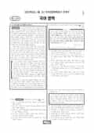

문제지


시험지를 먼저 풀어 보세요. 등급컷·표준점수·난이도는 흐리게 가려 뒀어요.
| 등급 | 원점수 | 표준점수 | 백분위 |
|---|---|---|---|
| 1 | 88 | 132 | 95 |
| 2 | 81 | 125 | 89 |
| 3 | 73 | 117 | 77 |
| 4 | 62 | 107 | 59 |
| 5 | 50 | 95 | 39 |
| 6 | 38 | 83 | 22 |
| 7 | 27 | 72 | 11 |
| 8 | 20 | 65 | 3 |
등급별 컷 · 만점 100점
| 등급 | 표준점수 이상 | 인원(명) | 비율 |
|---|---|---|---|
| 1 | 132 | 13,523 | 4.49% |
| 2 | 125 | 20,914 | 6.94% |
| 3 | 117 | 35,352 | 11.74% |
| 4 | 107 | 53,660 | 17.82% |
| 5 | 95 | 62,726 | 20.83% |
| 6 | 83 | 48,863 | 16.23% |
| 7 | 72 | 34,339 | 11.4% |
| 8 | 65 | 21,929 | 7.28% |
| 9 | 46 | 9,851 | 3.27% |
국어 영역 전체 응시자 기준이에요.
출처: 시·도교육청이 공개한 전국연합학력평가 성적 분석·통계자료(공개 자료 보기).
발행 기관: 시·도교육청(전국연합학력평가). 파일 위치: 이 사이트가 보관한 사본. 저작권은 발행 기관에 있습니다. 원본과 다르거나 게시 중단이 필요하면 연락처로 알려 주세요. 등급컷 출처 구분은 데이터 원칙에서 설명합니다.
막대 색은 역대 대비 난이도 · 진한 막대가 이 시험 · 막대를 누르면 그 회차로 이동
| 회차 | 1등급컷 | 표점 최고 | 1등급 표점 | 난이도 |
|---|---|---|---|---|
| 3월 학평2022년 고3이 시험 | 88 | 144 | 132 | 보통 |
| 10월 학평2021년 고3 | 91 | 138 | 130 | 쉬움 |
| 7월 학평2021년 고3 | 83 | 148 | 132 | 매우 어려움 |
| 4월 학평2021년 고3 | 89 | 139 | 130 | 보통 |
| 3월 학평2021년 고3 | 76 | 142 | 131 | 어려움 |